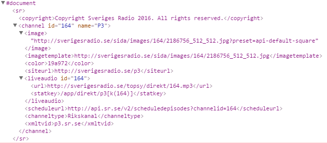
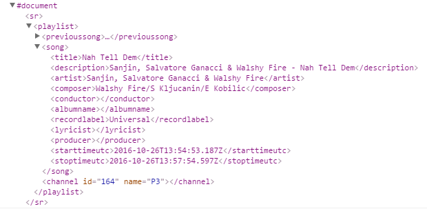
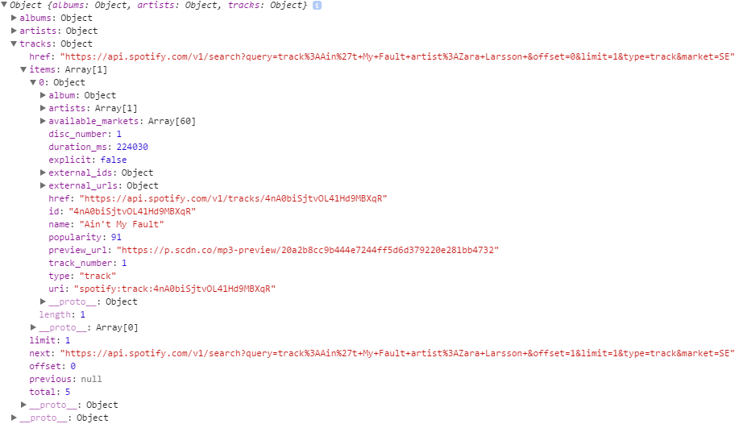
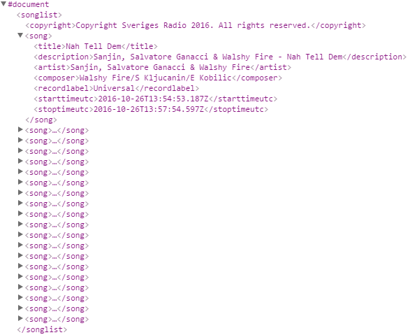

Nedan följer en beskrivning av Soundchecks ej implementerade API-design. Designen visar hur man via Soundchecks API skulle kunna hämta följande:
/v1/channel/{id}
GET
En XML-fil innehållande en radiospelare med aktuell sändning för SR-kanalen vars ID angetts. Information om kanalen och en SR-bild finns också med i filen.
Via Soundcheck hämtas en särskild SR-kanals aktuella sändning. I nuläget är endast P3 möjligt att hämta via Soundchecks API, vilket då anges med id 164 i klammerparenteserna.
/v1/channel/{id}/current_song
GET
En XML-fil med låtnamn och artist för den aktuella låt som spelas på SR-kanalen samt URL för att hämta denna aktuella låt på Spotify.
 Via Soundcheck hämtas låt och artist för den aktuella låten som spelas på P3, samt möjlighet att hämta denna aktuella låt från Spotify.
/v1/channel/{id}/previous_played?limit={amount}
GET
En XML-fil innehållande låt-historik från P3 och motsvarande låtar från Spotify.
Via Soundcheck hämtas från en SR-kanal en historik av de låtar som spelats. Antalet låtar som ska visas anges med parametern limit, genom att ange ett tal inom klammerparenteserna. Den returnerade XML-filen ger även möjlighet att hämta motsvarande låtar (de som finns i historiken)från Spotify.